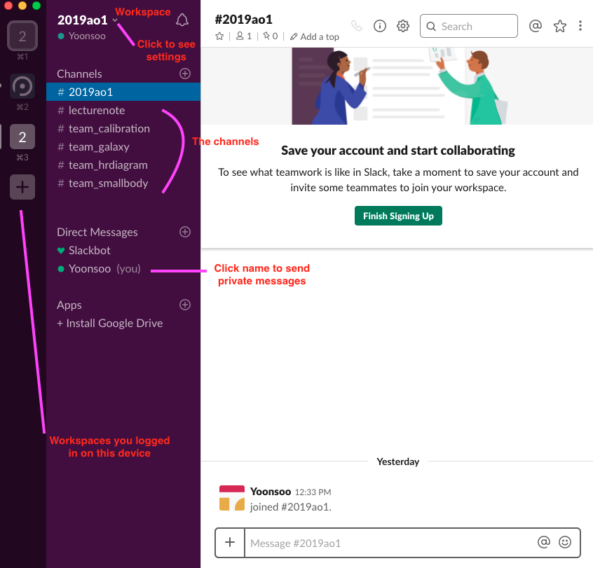

1. Software Tools#
In this chapter, you will install the necessary apps/softwares/packages that we will use throughout this course. I also put links to tutorials, if you are interested in advanced usage.
References
Some selected references are in this repo (link): Find files with name starts with S01.
The installation may take some time. If you have nothing to do, read the next section while the installation is going on.
If I say terminal, please understand it as terminal of UNIX/macOS or Git Bash of Windows.
I will use these terms without explaining in detail thoughout the practical part of the lecture.
- IRAF
Image Reduction and Analysis Facility. Conventionally used by many astronomers to analyze CCD data.
- AURA
Association of Universities for Research in Astronomy.
- NOAO
National Optical Astronomy Observatory. Developed and distributed IRAF.
- STScI
Space Telescope Science Institute. Took the role in developing PyRAF, but now (since around early 2010s) the direction is changed to use Python.
- PyRAF
Basically it is identical to IRAF. Just, it has a bit more mouse-interactive GUI. Now PyRAF is also kind of deprecated, as well as IRAF.
- SPP
Sub-Set Preprocessor. A programming language made solely for IRAF.
A bit more on SPP
Throughout your life as an observational astronomer, you may even never hear about SPP at all, depending on what you do. Here, I give a very brief excerpts that explain it.
STSDAS User Guide says:
Most IRAF and STSDAS applications are written in SPP, or Subset PreProcessor, which is the native programming language of the IRAF system. SPP is based on RATFOR–rational Fortran–and combines the familiarity of Fortran with some features of the C programming language.
SPP Reference Manual says:
The SPP language is based on the Ratfor language. Ratfor, in turn, is based on Fortran, with extensions for structured control flow, etc. The lexical form, operators, and control flow constructs are identical to those provided by Ratfor. The major differences are the data types, the form of a procedure, the addition of inline strings and character constants, the use of square brackets for arrays, and the task statement. In addition, the SPP I/O facilities provided are quite different and are tailored to the IRAF environment. The syntax of the SPP language is fairly straightforward and fundamentally similar to most other high-level languages. While it is based on the Ratfor language, there are elements of C as well as elements of Fortran. SPP is a preprocessed language. That is, there is no SPP compiler per se, but it is translated into another compilable language. In fact, SPP is first translated into Ratfor, which is processed into Fortran. The xc compiler performs all preprocessing, compilation, and linkage.
You can see the SPP source codes (which ends with .x) at $IRAFHOME, i.e., $ANACONDAHOME/envs/iraf/iraf/, e.g., $IRAFHOME/noao/twodspec/longslit/transform/fitcoords.x. The .par files are the parameter files which is related to epar of IRAF.
- CL:
Command Language. CL is the scripting language used purely for IRAF.
A bit more on CL
IRAF itself is made by SPP language, developed purely for IRAF, and CL is used to realize some functionalities of IRAF and make scripts/codes. PyRAF is developed basically to overcome some limitations of these SPP/CL as a programming/scripting language (but failed, in my opinion).
- Astropy
The name of a project dreaming for making a single core package that is useful for any astronomical studies. Not only to reproduce all the functionalities of IRAF, but to make it easier to develop original codes for any purpose.
- * IDL
Interactive Data Language. A commercial software widely used in astronomy and bio-imaging fileds. There is a critical problem in license issue.
1.1. Git and GitHub#
Go to GitHub and make your own ID.
The ID might be used in your future Resume (CV; 이력서).
Go to Git website to download/install git for your OS.
Note
Excerpt from StackOverflow:
Git is a revision control system, a tool to manage your source code history.
GitHub is a hosting service for Git repositories.
So they are not the same thing: Git is the tool, GitHub is the service for projects that use Git.
To get your code to GitHub, have a look here.
1.1.1. Git Tutorials#
Useful Web Tutorials: https://36-750.github.io/tools/version-control/
- Nicolas (YouTube)
Explain Git Like I’m Five in 2019, Trying GitHub Copilot in 2021.
NeuroHackademy 2021 (YouTube) :
2021-07-21: This is ~ 90min, concentrating on the CLI of git, including branching and merging. Somewhat complementary to the video below.
2021-07-23: This is ~ 50min, similar to above, but more practical for beginners, imho (including the usage of
.gitignore).
얄팍한 코딩사전 (Korean; (YouTube)) :
Teccboi Wonie (Korean; YouTube) :
1.2. Slack#
Some useful links:
Official slack: log in and see what workspaces you are in.
A random blog explaining Slack (Korean)
1.2.1. How to Join Slack Workspace#
TA will announce the “invitation link” to you.
Type your email and name.
Please use your real name in English (e.g.,
Yoonsoo); name is changable in the futureYou will use that email/pw for your future access to this workspace.
I encourage you to download & install the app at the downloads page.
Slack is usable on LINUX, Mac, Windows, Android phone, iPhone, etc.
So I suggest you to install it both on your PC and phone.
When login with your second device, put the workspace id (e.g.,
2020AO1) and use the email/pw you enrolled with your first device.
1.2.2. Terms#
The following analogy works:
Slack concept |
Similar concepts |
Examples |
|---|---|---|
workspace |
A course in ETL, a website (모임, 그룹) |
|
channels |
boards in such group or website (게시판, 채팅채널) |
|
1.2.3. Why We Chose Slack#
Slack is a software to make co-work easier; basically a “chatting app”. We chose this for our communication platform because
It is OS-independent: Windows, mac, Linux, iOS, Android, Windows Phone, etc all can use slack without much difference. It works perfectly even on web-browsers.
Supports channels (public, closed, private)
It is widely used among company, labs, researchers, developers, … . It might be helpful for your future to get used to this widely used software as early as possible when you are allowed to make mistakes.
Codes can be inserted (shown) cleanly than any other platforms (Kakaotalk, Line, Facebook, …).
Can be integrated with, e.g., github, Dropbox, and Google Drive.
All content inside Slack is searchable, including files, conversations, and people.
Especially, 1, 4 and 5 are the main reasons we dropped Kakao-talk or the likes which we’ve used for years.
1.2.4. Tips for Slack#

In our workspace, 2020ao1.slack.com, you can see the left side bar:
At the top, you can see the workspace name and your ID. Click it and set your profile from the drop down menu.
All Threads: to see “threads”, which you will learn as time goes.Channels: “boards” or “chatting channel” (게시판; 채팅채널)Direct Messages: You may click a person’s ID and send private messages.Invite People: You will see what it means after clicking it.Apps: Slack has powerful “integration” with third party apps such as Google Drive and Github. You can add your own github repo and make it to send summary message to your group’s channel so that everyone can share information about the updates easily.
You will mostly use the channels which will be made based on your group topics (e.g., #active_comet, #GRB, #satellites).
Messaging is similar to Facebook or Instagram system + markdown.
Use
@to call (tag) a person, such as “@Yoonsoo”Use
#to tag a channelMarkdown (slightly different from major markdowns):
Bold: Embrace with asterisk (
*bold*)Italic: Embrace with underscore (
_italic_)~~Strike~~: Embrace with tilde (
~strikethru~)short code: Embrace with one single back quote (`)For long codes or preformatted, embrace with three back quotes (```):
``` This is a preformatted line ```
This is a preformatted line
You may also use Emoji by typing
+:emoji_name:orctrl+shift+\.You can add file directly (drag and drop). If it’s a code or plane text, slack will show a snippet (short excerpt).
If you hover on it, you can see some buttons to “react” like facebook, “comment”, “share file”, etc.
1.3. Anaconda#
All the IRAF/Astropy packages, as well as usual python packages, will be downloaded via a platform called Anaconda. When the download is done, install Anaconda following the website’s instruction.
Tip
If you are running out of space and really want very small essential package, try miniconda.
Important
I recommend to use Anaconda3 and use Python 3.10 or later.
Note
The support for Python 2 is ceased. See, e.g., PEP373, Python3Statement. python clock was made by Guido (The inventor of Python). All the astropy and its affiliated packages, matplotlib, and many more which you are familiar with, does not support Python 2 after 2019.
For useful things in Python 3 compared to 2, see Python 3 for scientists.
Danger
If you use Windows, you will see a list of checkboxes while installing. For the checkbox related to PATH, you should CHECK it. If you haven’t, I have no other solution but re-install anaconda.
Danger
If you are installing it on terminal, answer the questions like “add to PATH” with yes.
1.4. IRAF/PyRAF (deprecated)#
IRAF/PyRAF is deprecated
IRAF/PyRAF works only on UNIX, and you cannot run it correctly on Windows.
There have been a lot of different ways to install IRAF: First people had to download with a lot of commands including “cd ..”, “wget blahblah”, etc. Then STScI developed a huge pack of all necessary softwares, named Ureka. But using Ureka is deprecated since April 2016. Now we use AstroConda. There are reasons for these transformations, and you may be able to find the reasons as time goes, if you are interested.
In terminal, type the followings (This may take tens of minutes depending on the Internet connections!)
conda config --add channels http://ssb.stsci.edu/astroconda
conda config --set channel_priority false
conda create -n iraf python=2.7 iraf-all pyraf-all stsci
The name of the environment, iraf, is iraf27 in the original official website, but I just prefer iraf because it’s shorter. You can set it as any name you like.
1.5. Editors#
There are bunch of different editors (including IDEs = Integrated Development Environment) to edit the codes. As of 2023, I guess the simplest choice would be Microsoft Visual Studio Code (VS Code). As VS Code is a bit heavy when all linting options are turned on, you may prefer to use simpler text editors for quick edits.
Other people may prefer spyder, Sublime Text 3, Atom, Wing IDE, PyDev, PyCharm, and even VI (vim) or Emacs. (Recently, vast majority of sublime text and atom users have migrated to VS code, AFAIK).
If you can, I recommend using VI as a sub editor, or at least learn how to use it. I don’t use VI just because for me it is too difficult to use it.
1.6. Image Displayer#
In astronomical image reduction process, you need some tools to display images on computer screen to interactively investigate the images. There is a historical standard, which is kind of an affiliated package of IRAF, SAO ds9. Some people (especially amateurs) use Maxim DL or other programs, but they are mostly commercial. In the future, as Python gets more and more attention, Ginga (see below) will be another powerful option. I am not sure when Ginga will become quite perfect, but until then, I recommend you to use both of them. Their pros and cons will be explained from now.
1.6.1. SAO ds9#
Many useful documentations and YouTube videos: SAOImageDS9 - Documentation (retrieved 2022-11-30).
Note
Among the materials, I think this lecture note by George J. Bendo (or also at http://www.jb.man.ac.uk/~gbendo/Sci/Pict/DS9guide.pdf) is a perfect DS9 tutorial.
Warning
For CIAO tutorials, you need to install CIAO environment from conda – not recommended if you don’t understand what it means.
SAO ds9 was made for Chandra X-ray observation, but became so powerful that it has been used for decades by virtually all astronomers. It has many powerful features, and for me it’s more convenient than ginga. By the system default, you will use ds9 to open any FITS image.
If you want to run ds9, you can do ds9 & on terminal. Once you’ve got used to ds9, you can do a bit advanced command such as
Example
Do zscale to three images, color map of viridis (matplotlib standard), and show single frame only (hit tab key to change frames):
$ ds9 -zscale -cmap virids image01.fits image02.fits image03.fits -single &
Do zscale to all images, let the computer view of all image synced based on “IMAGE” coordinate, let all frames share the scale and limits for display, and show single frame only (hit tab key to change frames):
$ ds9 -zscale image*.fits -lock frame image -scale linear -lock scalelimits yes -single &
Same as above, but lock the view with WCS information:
$ ds9 -zscale image*.fits -lock frame wcs -scale linear -lock scalelimits yes -single &
Using DS9 in IRAF
If you want to turn ds9 on IRAF console, put exclamation mark (!):
ecl> !ds9 &
and !ds9 image*.fits -single &, etc, will work identically. There is another task called DISPLAY in IRAF. Type
ecl> epar display
to see the parameters. Some frequently used commands are the zscale command, e.g., displ image*.fits z1=100 z2=3000.
Be careful since DISPLAY shows different pixel values than actual value: See here.
For more command line options, see this link.
1.6.2. Ginga: Astropy Affiliated#
Ginga (pronounced ging-ga, which means galaxy in Japanese; the reason for the name is explained in the link) is an affiliated package of astropy, and is a FITS image viewer.
If you want to download it, type
conda install -c astropy ginga
It is made to serve the role as SAO ds9, but to perform some useful calculations that ds9 cannot do by default. ds9 has tremendous power when it is used with IRAF, but that is not a favorable solution for Python users. So Ginga is made to fully funtional with Python only, as well as to be able to interact with IRAF as ds9 does.
You can use $ ginga & on terminal or ecl> !ginga & on IRAF console. Although you can do ginga image.fits & as you did for ds9, it is usually better to use interactive drag-and-drop way to open image than command line. In ginga, you can also use Operation -> utils -> FBrowser.
The most important feature of ginga is to use it for interactive FWHM estimation and radial profile check, which is done by pick: documentation.
I couldn’t find how to use Ginga with IRAF yet…. Though this official site says you can, I could not succeeded in using it. I think this is a known bug that you actually cannot.